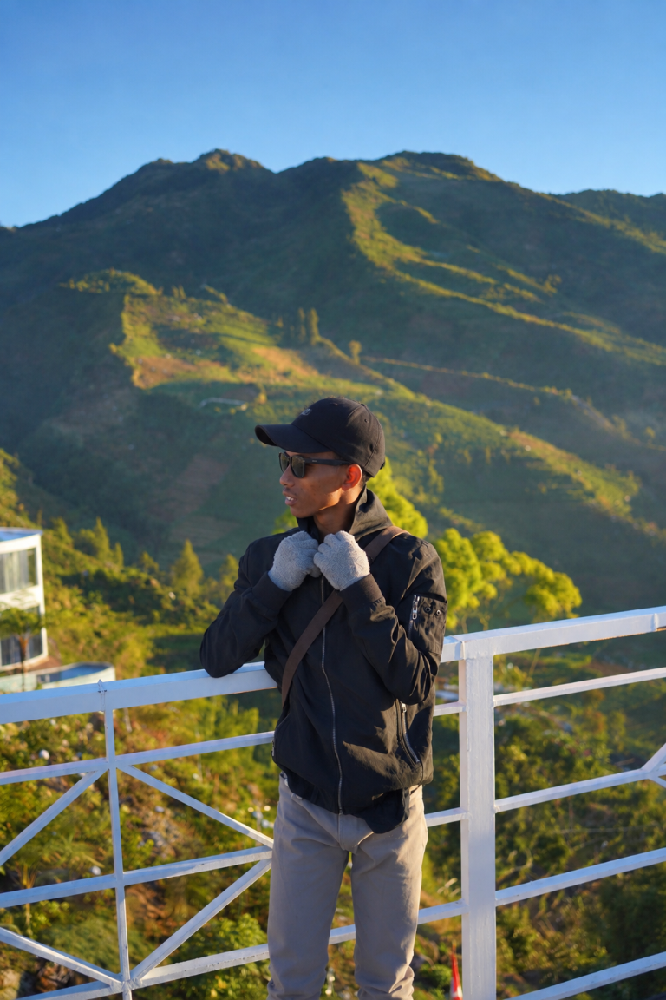

Mahasiswa Semester 5
- Perguruan Tinggi
- Universitas Annuqayah
- Program Studi
- Teknologi Informasi
- Fakultas
- Teknik dan Transformasi Digital
MAHASISWA & WEB ENTHUSIAST
Student | Lifelong Learner | Technology Enthusiast
Mahasiswa Teknologi Informasi yang bersemangat untuk belajar, membangun karya digital, dan menciptakan peluang baru.

ALI FIKRI · MAHASISWA TI01 / TENTANG SAYA
Saya Ali Fikri, mahasiswa semester 5 Program Studi Teknologi Informasi di Universitas Annuqayah. Saya berdomisili di Kabupaten Sumenep, Jawa Timur.
Saya memiliki ketertarikan besar pada pengembangan website, teknologi informasi, dan pembelajaran mandiri. Saya percaya karya terbaik lahir dari rasa ingin tahu yang konsisten.
 SUMENEP · JAWA TIMUR
SUMENEP · JAWA TIMUR
02 / PERJALANAN PENDIDIKAN
03 / KEAHLIAN & MINAT
Fokus dan tujuan saya saat ini.
04 / PROYEK PILIHAN
Proyek latihan dan eksplorasi.
WEB DEVELOPMENT · 2025
Konsep aplikasi catatan harian dengan tampilan yang ringan dan nyaman dibaca.
UI DESIGN · 2025
Eksplorasi desain halaman jurnal digital untuk mengumpulkan inspirasi sehari-hari.
* Proyek latihan — deskripsi dan detail bisa disesuaikan dengan karyamu.
05 / KONTAK
Hubungi saya melalui email atau WhatsApp untuk berdiskusi dan berkolaborasi.